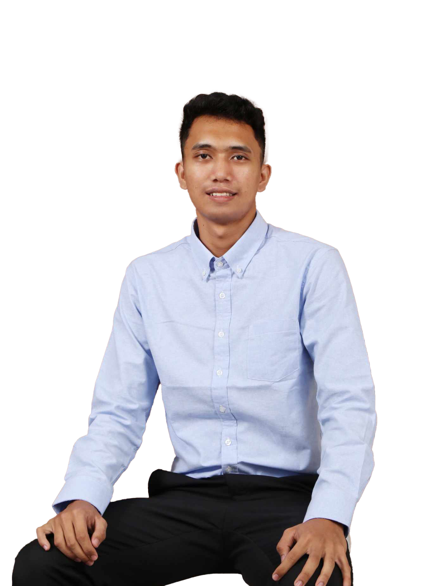

A3
Skills
// caption.txt — tags used across every project
// Trainings and Certificates
HP LIFE Online Course — Social Media Marketing

IT Support & Social Media Content Specialist, Video Editor — Computer Engineering graduate with hands-on experience in IT support, data handling, and system monitoring. Strong in data accuracy, documentation, troubleshooting, and adaptable to fast-paced, technology-driven environments.

I started out on the technical side — troubleshooting systems, encoding records, keeping infrastructure quiet and reliable. Then I landed on Innovate Iloilo, a city government project, and ended up running its website and social platforms almost by accident. That's where it clicked: I liked making things people actually stopped to look at more than I liked fixing what was broken underneath them.
Now I'm with the Concepcion Tourism Office, handling the town's social media presence and video content end to end — everything from resort and island promos to event coverage on the official page. I also designed and built a JavaScript-based online booking system from the ground up to cut down guest wait times, so the IT side never really left, it just moved behind the scenes. Everything below is proof of both halves.
Run the office's social media presence end to end — publication materials for tourism announcements, events, and celebrations, plus every video on the official Facebook page, including promos across the town's islands, resorts, and partner establishments. Designed and built a JavaScript-based online booking system from concept to a fully working tool that cuts guest wait times, and assist visitors directly with itineraries around town.
Ran the project's website and social media platforms end to end — content, timing, uploads, and the promotional materials behind them. Also handled system monitoring, backups, and coordination with project partners so nothing dropped mid-campaign.
Encoded and maintained daily patient statistics and health records where a single misplaced digit had real consequences. Built the habit of checking my own work before anyone else has to.
Collaborated with the IT team on front-end design revisions and everyday troubleshooting — the first place I learned that good work is invisible when it's done right.
Every project I've shot, edited, or built pulled straight from the source.
Photo proof of the work — event coverage, shoots, and the day-to-day.


Things I've built, start to finish.
Designed and built a JavaScript-based online booking tool from concept to a fully working system, cutting down guest wait times for resorts and island trips around town.
Poor management of sanitation services is a growing problem that is contaminating drinking water in households. Apart from other related studies, the researchers have different real-time monitoring of drinking water quality, the parameters used are TDS (Total Dissolved Solids), temperature, and pH. The IoT Platform researchers used is ThingSpeak, useful to households, and is the primary focus of this research.
Open to social media content, video editing roles and IT support — whether remote, hybrid, or on-site around Iloilo. Reachable any day of the week; I keep my inbox in better order than most of my footage.